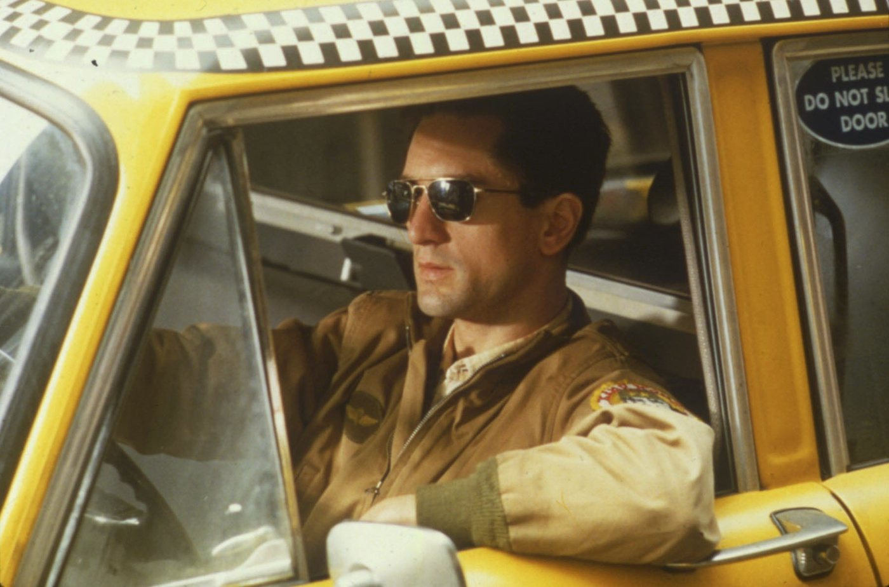
1Taxi Driver
Martin Scorsese · 1976
Pourquoi ce filmÀ côté des études
On en apprend beaucoup sur quelqu'un avec ses films, sa musique et ses jeux. Voici les miens. Cliquez sur une carte, je vous raconte pourquoi.
Le cinéma, c'est mon premier loisir. Au point d'avoir codé Noctambule pour planifier mes séances. Voici les cinq films que je défendrai toujours.

Martin Scorsese · 1976
Pourquoi ce film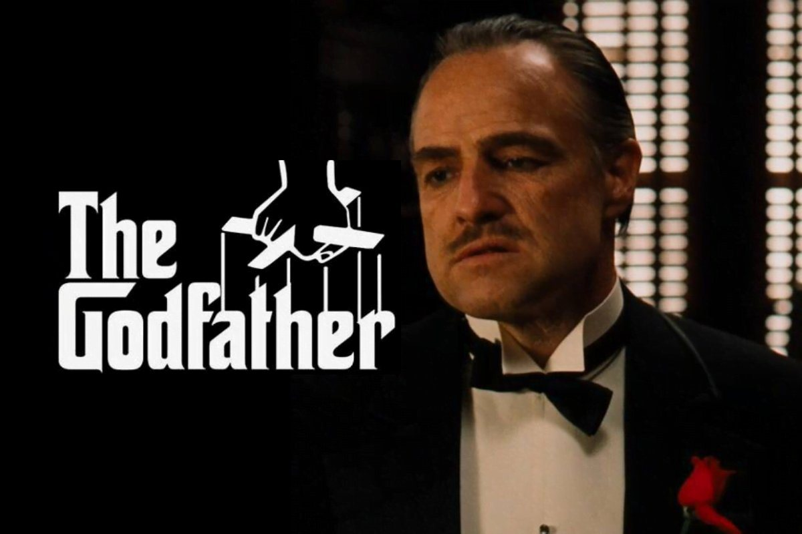
Francis Ford Coppola · 1972 – 1974
Pourquoi ces films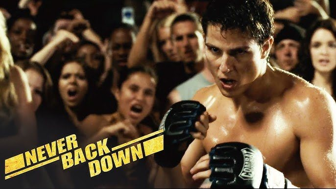
Jeff Wadlow · 2008
Pourquoi ce film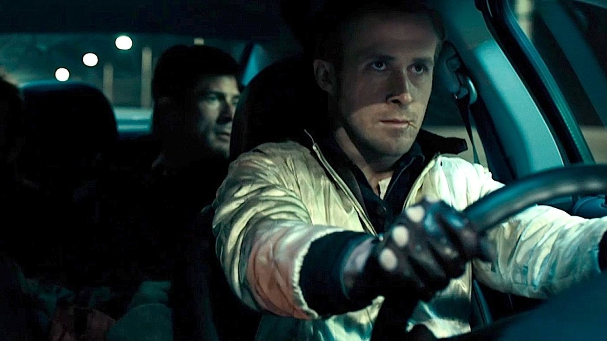
Nicolas Winding Refn · 2011
Pourquoi ce film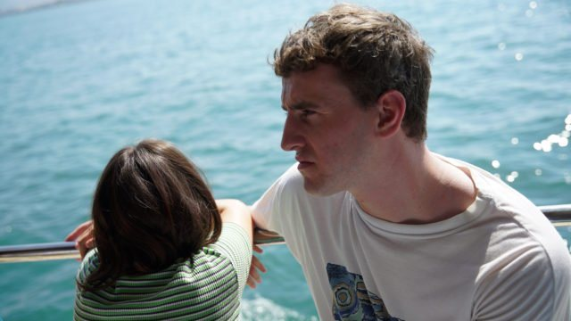
Charlotte Wells · 2022
Pourquoi ce film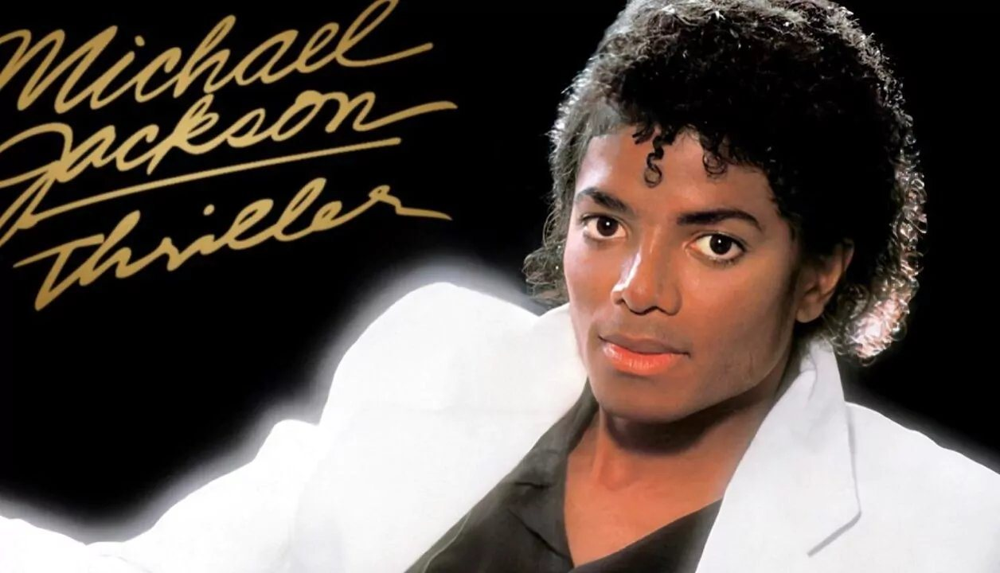
Le Roi de la Pop
Pourquoi lui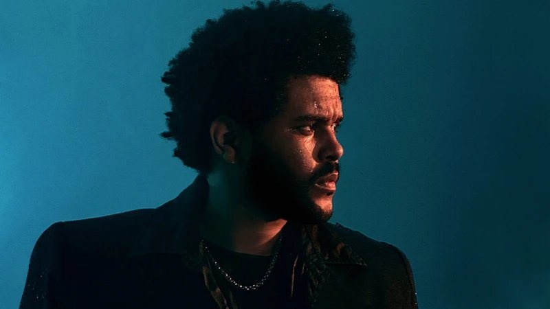
R&B · pop · Toronto
Pourquoi lui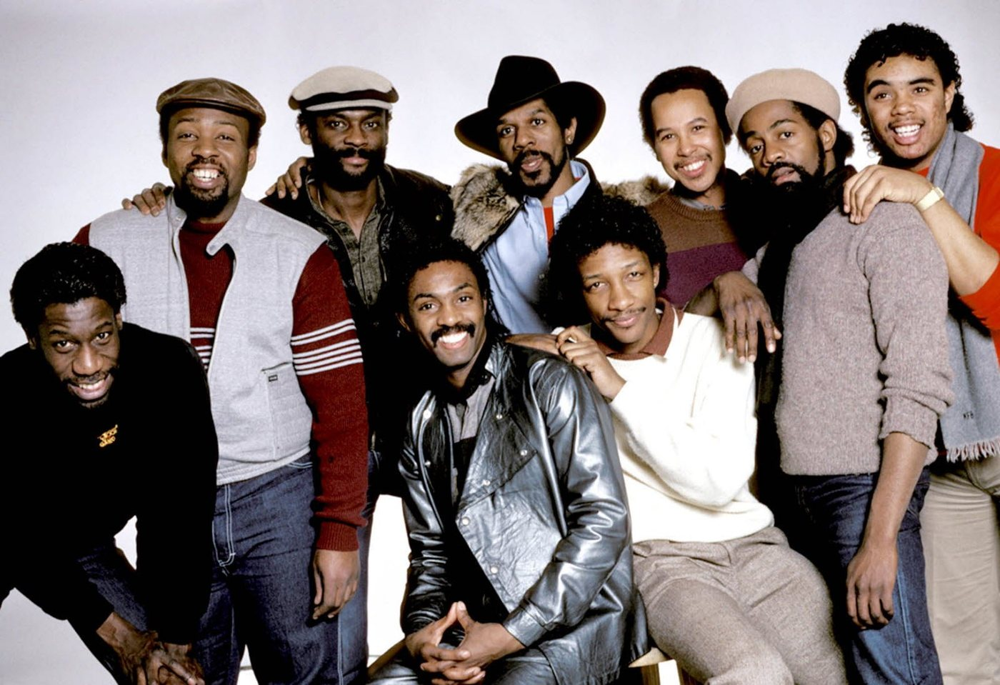
Funk · soul · disco
Pourquoi eux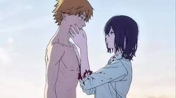
Kensuke Ushio · bande originale de Chainsaw Man
Mon morceauPourquoi le piano
Le piano, c'est l'inverse du clavier d'ordinateur : pas de Ctrl+Z. Chaque note compte, chaque répétition paie. C'est là que j'ai appris la patience. Une chose difficile devient simple à force d'y revenir tous les jours.
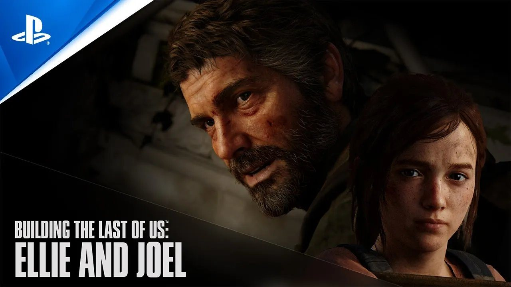
Naughty Dog · 2013 – 2020
Pourquoi ce jeu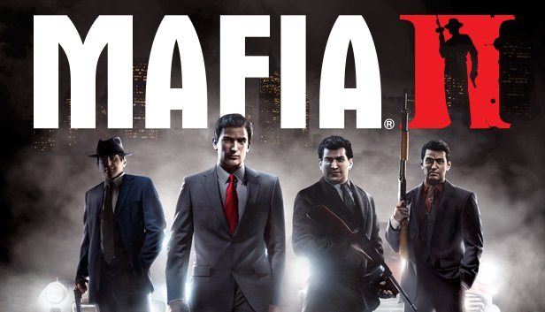
2K Czech · 2010
Pourquoi ce jeu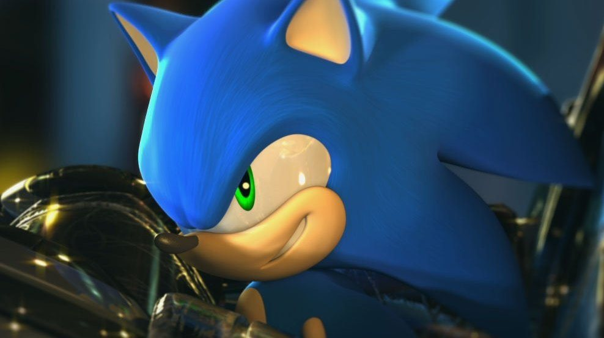
SEGA · depuis 1991
Pourquoi cette saga